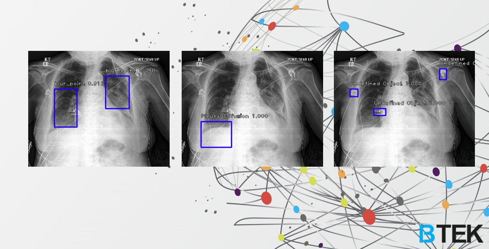
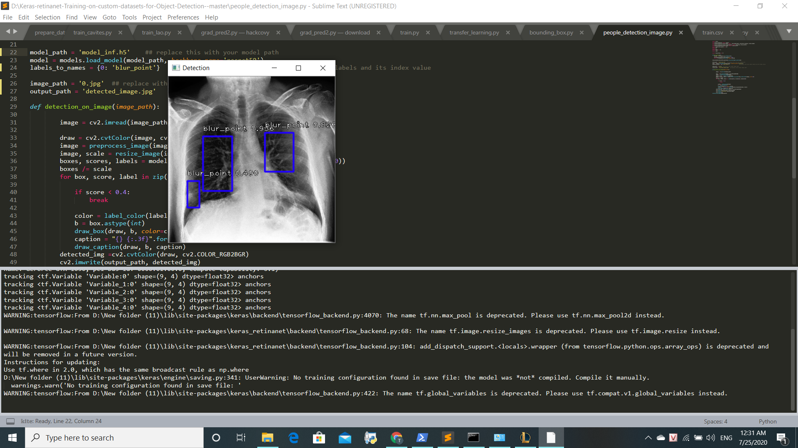

Overview
Problem
During the COVID-19 pandemic, healthcare systems faced overwhelming demand for rapid and accurate medical diagnosis. Traditional diagnostic processes were slow and required significant medical expertise, creating bottlenecks in patient care.
Solution
BDoctor leverages deep learning and medical image segmentation to provide automated diagnostic assistance. The system uses convolutional neural networks trained on medical imaging data to detect and analyze potential health conditions, supporting healthcare professionals in rapid decision-making.
Impact
Won 3rd Prize in Track A.I at HackCovy Competition (April 2020) and was accepted into the HackCovy Hackcelerator Incubation program co-organized by UNDP Vietnam, AngelHack, and Hanoi Youth Union, supporting pandemic response efforts.
My Role & Contributions
- Designed and implemented AI/ML architecture for medical image analysis and diagnosis
- Developed deep learning segmentation models for medical imaging interpretation
- Trained neural networks using GPU acceleration (NVIDIA GTX 1070) for efficient model development
- Built and tested multiple model iterations to optimize diagnostic accuracy
- Created demonstration platform showcasing real-time diagnostic capabilities
- Presented solution at HackCovy Competition, winning 3rd Prize in A.I Track
- Participated in UNDP-backed Hackcelerator Incubation program for further development
Tech Stack & AI Components
Machine Learning
Hardware & Infrastructure
Frameworks & Tools
Application Domain
Results & Recognition
3rd Prize in A.I Track - HackCovy Competition
Won 3rd place in the Artificial Intelligence track at HackCovy Competition (April 2020), a hackathon focused on developing technology solutions for COVID-19 response and pandemic challenges.
HackCovy Hackcelerator Incubation Program
Accepted into prestigious incubation program co-organized by UNDP Vietnam (United Nations Development Programme), AngelHack, and Hanoi Youth Union to further develop and scale the BDoctor platform.
Working AI Diagnostic System
Successfully developed and demonstrated functional medical image segmentation and analysis system. Multiple demo videos showcase the platform's diagnostic capabilities.
Technical Achievement
Implemented sophisticated deep learning models for medical imaging, achieving accurate segmentation results through iterative training and optimization on GPU-accelerated infrastructure.
Project Gallery




Development Journey
Watch Demo Video
Watch Technical Overview
Watch Presentation
Watch Update Demo